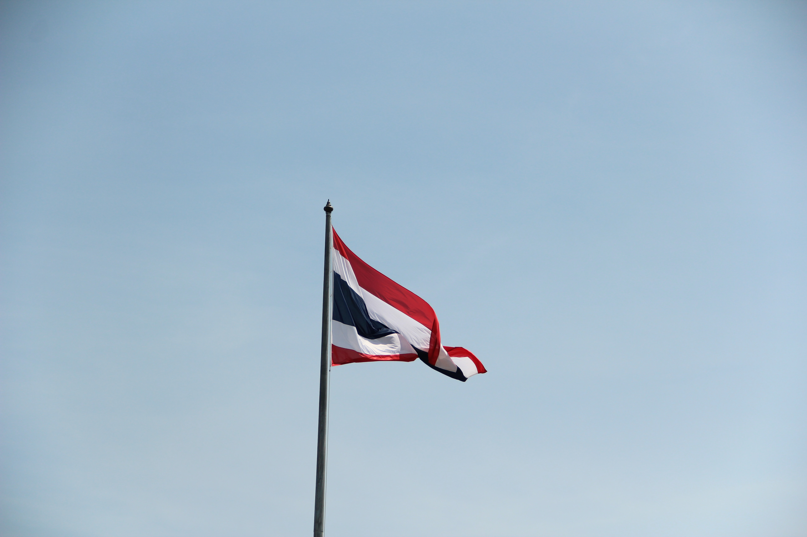
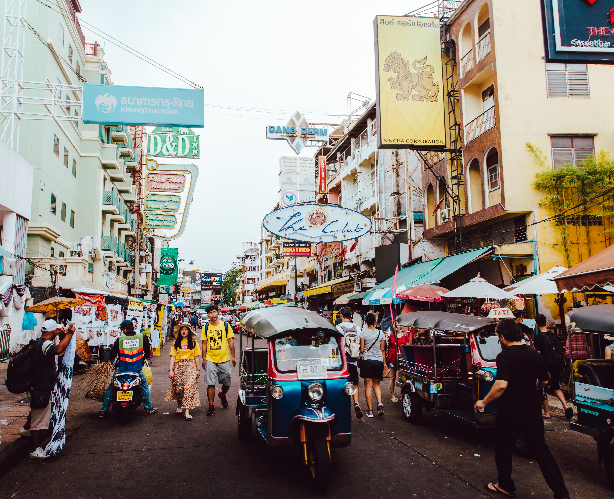
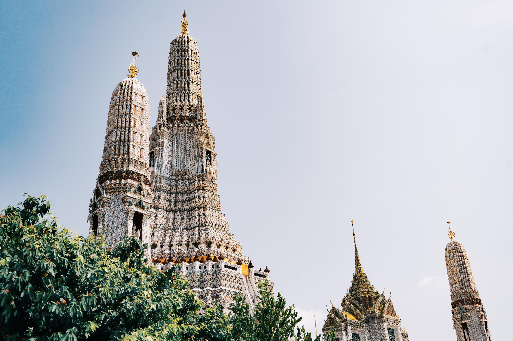

Thailand
Thailand
多彩な魅力を持つ
「微笑みの国」



Thailand
多彩な魅力を持つ
「微笑みの国」
92 Strand Rd., ヤンゴン ミャンマー
Building No. 19/43,
Sun Pat Street Pabedan Township, ヤンゴン
Ngwe Saung Village, Pathein Division, グエサウン, Ayeyarwaddy,